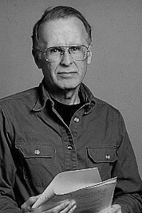

|  |
1977 год John W. Backus (1924-2007) «За его глубокий, оказавший большое влияние вклад в проектирование практических высокоуровневых программных систем, в частности за его работу над языком Фортран, и его оригинальную публикацию по формализации спецификаций языков программирования» |
Страна: США
Образование: Бакалавр науки в области математики, Колумбийский университет, 1949
О лауреате
С весны 1949 года Backus работал в IBM Computing Centre с Selective Sequence Electronic Calculator (SSEC), компьютером на радиолампах. Одной из главных целей работы с SSEC в то время был расчёт таблиц эфемерид, и над этой задачей Backus трудился три года. Методы, разработанные им и его командой, позднее были использованы NASA в лунной программе. В это время программирование заключалось в написании инструкций в машинном коде. Чтобы облегчить этот процесс Backus написал программу Speedcoding, которая позволяла описывать операции с числами с плавающей точкой в более символической форме – она легла в основу нового языка FORTRAN. Проект FORTRAN занял 2 года разработки и состоял из 25 000 строк машинного кода. После завершения проекта Backus присоединился к интернациональному комитету для разработки языка ALGOL. В ходе своей работы, совместно с P. Naur он создал нотацию BNF (Backus-Naur Form), которая является большой вехой в формализации языков программирования.
Ключевые слова: Speedcoding, FORTRAN, ALGOL, Backus-Naur form of Function-level programming
Краткая библиография
| 1. |
Backus, J., “The IBM Speedcoding System,” The Journal of the Association for Computing Machinery, Vol. 1, Num. 1, pp. 4-6, January 1954. |
| 2. |
Backus, J. and H. Herrick, “IBM 701 Speedcoding and Other Automatic Programming Systems,” Symposium on Automatic Programming for Digital Computers, Office of Technical Services, US Department of Commerce, May 1954. В этих двух работах подробно описывается работа Backus в сфере языков высокого уровня, разработанных для IBM701 и нацеленных на упрощение проблемы вычислений чисел с плавающей точкой. |
| 3. |
Specification for the IBM Mathematical FORmula TRANslating System, FORTRAN, IBM Applied Science Division, New York, November 10, 1954. |
| 4. |
Backus, J. et al., “The FORTRAN Automatic Coding System,” Proceedings of the Western Joint Computer Conference, February 26-28, 1957, Vol. 11, pp. 188-198. Представленные статьи детально описывают разработку языка FORTRAN. |
| 5. |
Backus, J. “Can Programming Be Liberated From the von Neumann Style? A Functional Style and its Algebra of Programs,” Communications of the ACM, Vol. 21, Num. 8, 1978, pp, 613-641. В этой работе Backus предлагает основание функционального программирования. |